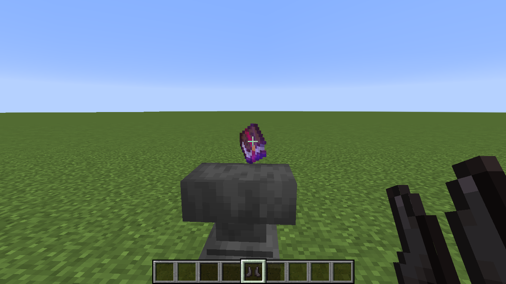
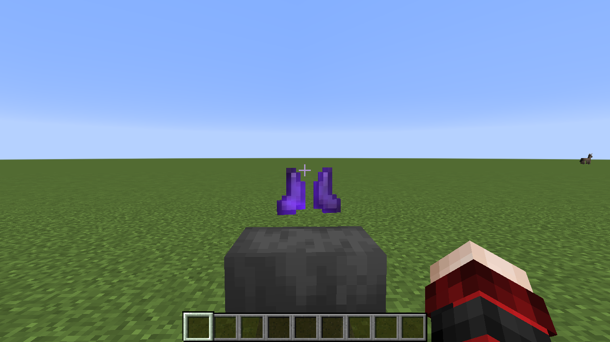
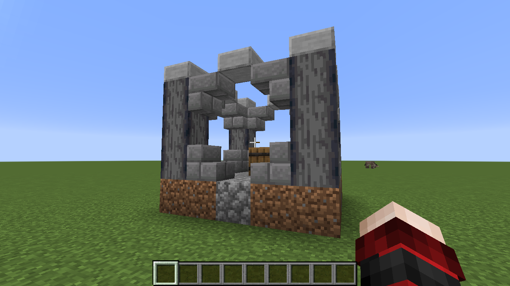
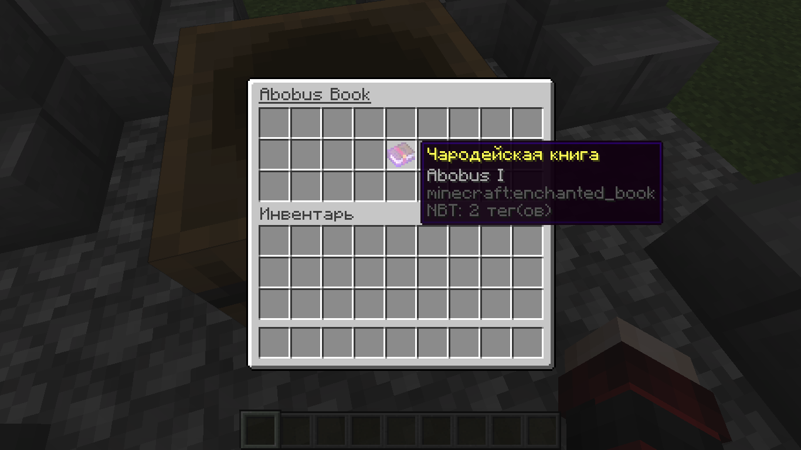
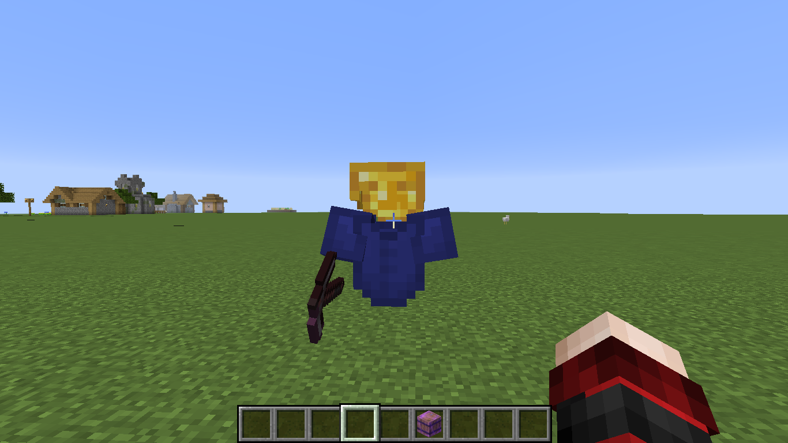
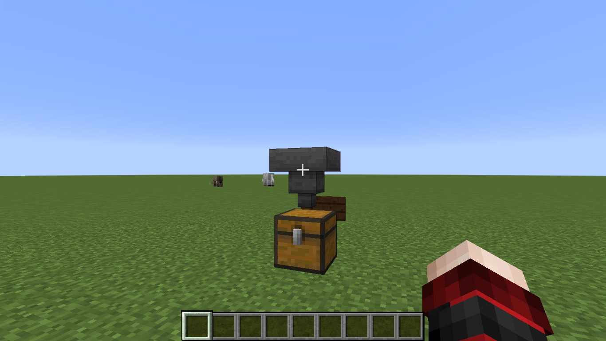

Здесь вы сможете найти некоторую информацию насчёт идей по майнкрафту. Надеюсь, это поможет вам в ваших проектах,
или подтолкнёт к чему-нибудь интересному. Желаю приятного пребывания на моём сайте :)
Благодаря этому лайвхаку вы сможете запереть свой сундук на «Ключ». Так можно сделать более-менее безопасное хранилище. Для приключенческих карт это тоже может подойти.
Благодаря этой команде вы сможете открыть сундук держа в руке любой предмет в именем,
которое вы указали в команде(в моём случае key).
В команде необходимо прописывать имя предмета так, как показано на скрине(в "").
В противном случае у вас ничего не получится.
К сожалению, с этой
командой не получается отследить некоторые параметры ключа: цвет текста, курсив,
жирность текста и некоторые другие. В общем, у меня не получилось это отследить.
Запирание сундука относится также к 2-м сундукам, шалкерам, печкам, воронкам
и некоторым другим блокам. ОДНАКО! дверь не является блоком-сущностью, поэтому
запирать дверь неполучится.
Также из МИНУСОВ: нельзя защитить запертые сундуки
от влияния воронки(покрайней мере у меня не получилось).
Этот лайвхак позволит вам заставить любого моба спать.
Команда: /data merge entity @e[type=minecraft:evoker,limit=1] {SleepingX:215,SleepingY:4,SleepingZ:-108}
В этой команде при указании координат указывайте координату части кровати с подушкой. В противном случае получится вот так.

Можете не беспокоиться насчёт ориентации моба, если вдруг спавните его без интеллекта, он сам подстроится под кровать
Моб не играет абсолютно никакой роли. Вы можете использовать мобов начиная от маленького зомби и заканчивая эндер-драконом. Это может пригодится для создания карт. Пользуйтесь наздоровье )
Данная команда позволит вам посадить одного моба на другого. Это работает абсолютно со всеми мобами. ОДНАКО с игроком это не работает(на игрока нельзя никого посадить).
Команда: /summon minecraft:pig ~ ~ ~ {NoAI:1b, Passengers:[{id:"villager", Passengers:[{id:"villager", Passengers:[{id:"villager", Passengers:[{id:"villager"}]}]}]}]}.
Основной тег оформляется вот так: Passengers:[{id:""}]
Наездники на летучих мышах ))
Данная команда позволит вам заспавнить любую вещь, которую вы не сможете поднять. Этой командой возможно регулировать время подбирания вещи.
Команда: /summon minecraft:item ~ ~ ~ {Item:{id:"diamond", Count:1b}, PickupDelay:100000}. Основным параметром для изменения является PickupDelay. Прошу вас соблюдать синтаксис.
Благодаря этой команде вы сможете выдать себе любую вещь, которая зачарована ни на что. Здесь зачарование идёт как декор.
Команда:/give @s minecraft:gold_block{Enchantments:[{}]}.
Интересно то, что внутри тега Enchantments:[] можно указывать другие зачарования в {}.
Например: Enchantments:[{id:"sharpness", lvl:999},{id:"protection", lvl:999}].
Тут id это id зачарования, если плохо знаете английский, поищите в интернете, но лучше УЧИТЕ АНГЛИЙСКИЙ )). Вам он очень пригодится в дальнейшем.
Синтаксис этой команды будет по-сложнее. Такая команда будет полезна для создание карт. Она позволит вам создать жителя с такими предметами для торговли, с которыми вы сами захотите.
Команда: /summon minecraft:villager ~ ~1.8 ~ {NoAI:1b,VillagerData:{profession:cartographer, level:5, type:plains}, CustomName:{"text":"Bank", "color":"yellow"}, Offers:{Recipes:[{ buy:{id:gold_block, Count:2}, sell:{id:emerald, Count:1}, maxUses:9999999},{buy:{id:emerald, Count:1}, sell:{id:gold_block, Count:2}, maxUses:9999999}, {buy:{id:diamond, Count:1}, sell:{id:emerald, Count:3}, maxUses:9999999}, {buy:{id:emerald, Count:3}, sell:{id:diamond, Count:1}, maxUses:9999999}, {buy:{id:emerald_block, Count:1}, sell:{id:netherite_ingot,Count:1}, maxUses:9999999}, {buy:{id:netherite_ingot, Count:1}, sell:{id:emerald_block, Count:1}, maxUses:9999999}, {buy:{id:diamond, Count:3}, sell:{id:netherite_ingot, Count:1}, maxUses:9999999}, {buy:{id:netherite_ingot, Count:1}, sell:{id:diamond, Count:3}, maxUses:9999999}, {buy:{id:diamond, Count:6}, sell:{id:wither_skeleton_skull, Count:1}, maxUses:9999999}, {buy:{id:wither_skeleton_skull, Count:1}, sell:{id:diamond, Count:6}, maxUses:9999999}]}}
Основной тег для редактирования торгов это Recipes:[]. Предметы указываются вот так { { buy:{id:"id предмета, который он будет у вас требовать", Count:2b(кол-во, буква b обязательна)}, sell:{тоже самое, что и в buy}, maxUses:9999999(количество использования) } }
Здесь находятся инструкции к моим датапакам. Сами датапаки я выкладывать не планирую.
Этот датапак позволит создать переносную лошадь, параметры которой будут заметно выше, чем у других. У неё повышенная скорость и огромный запас здоровья, так что убить её просто так не получится.
Это предусмотренно для того, чтобы вы не смогли потерять свой транспорт в каком-нибудь несчасном случае, однако она НЕ БЕССМЕРТНА, ведь у неё всего 1000 hp(это не опечатка), поэтому убить её всё-таки можно. ОДНАКО я упоминал, что она переносная, поэтому в неё предусмотрена такая функция. Для того, чтобы "подобрать" транспорт, вам всего-то надо открыть меню этой лошади(Shift + ПКМ по ней) и снять с неё седло.
Как только седло будет снято, ваша лошадь умрёт, а на её месте появится звезда незера, при помощи которой вы сможете заново заспавнить данную лошадь в любом другом месте.
Предмет для спавна лощади крафтится на обычном верстаке.
Предметы для крафта:
1 стекло;
5 слитков железа;
2 чёрные шерсти;
Данный датапак добавит в майнкрафт новое зачарование. Так как датапак тестовый, то зачарование пока только одно и работает только на незеритовых ботинках.
Данное зачарование накладывается на незеритовые ботинки немного другим способом, чем обычные. Для этого необходимо закинуть незеритовые ботинки и книгу зачарования на наковальню. Результат будет таким.
А найти такую книгу можно в этом данже.В бочке
 Думаю, что большинство людей хотели майнить афк. Я создал датапак, который позволит создать карьер, копающий 3х3 блоков до бедрока. Этот датапак добавляет вот такого шахтёра, который будет капать вертикально вниз и 3х3 блока в ширину.
А также сборщика ресурсов, как на этой картинке.

Для активации карьера или сборщика ресурсов, вам необходимо будет просто выбросить на землю особый предмет. Для активации карьера, выбросите на землю особую плавильную печь, а для сборщика - особую бочку(см. на скрин в слоты хотбара). Эти особые предметы вы сможете купить у торговца, которого заспавните вот этой командой
/function carrier:spawn_carrier_shop
Однако ленивые, или любители выдачи предмета моту выдать себе и то и другое при помощи команд:
Для карьера:
/function carrier:get_carrier
Для сборщика ресурсов:
/function carrier:get_carrier_pickup
 Minecraft
Minecraft